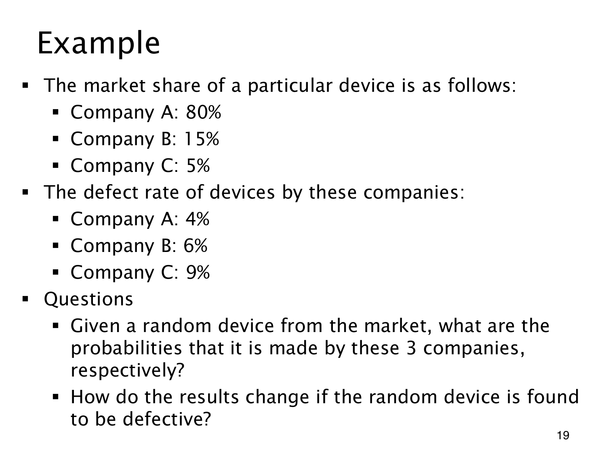

L1.10 · 第 19 页讲解原文
查看这一页课件

缺陷设备来自哪家厂家
市场只考虑 A、B、C 三个互斥且穷尽的来源。随机取设备时，市场份额就是来源先验；观察到缺陷 D 后，要按各厂家产生缺陷设备的贡献重新归一化。
| 厂家 | 市场份额 | 缺陷率 | 联合概率 p(厂家∩D) |
|---|---|---|---|
| A | 0.80 | 0.04 | 0.032 |
| B | 0.15 | 0.06 | 0.009 |
| C | 0.05 | 0.09 | 0.0045 |
“缺陷设备”的总概率为 p(D)=0.032+0.009+0.0045=0.0455，因此
p(A∣D)=9164≈0.7033,p(B∣D)=9118≈0.1978,p(C∣D)=919≈0.0989.
三项相加为 1。C 的缺陷率最高，后验也从 5% 上升到约 9.89%；但它的份额小，仍不是最可能来源。A 的缺陷率较低，却贡献最多缺陷设备。“厂家缺陷率高”与“随机缺陷产品最可能来自它”并非同一个概率判断。